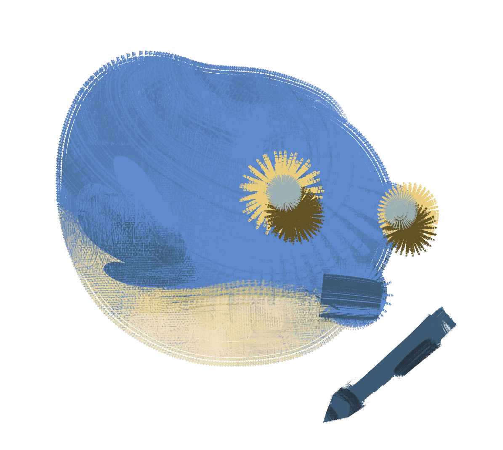
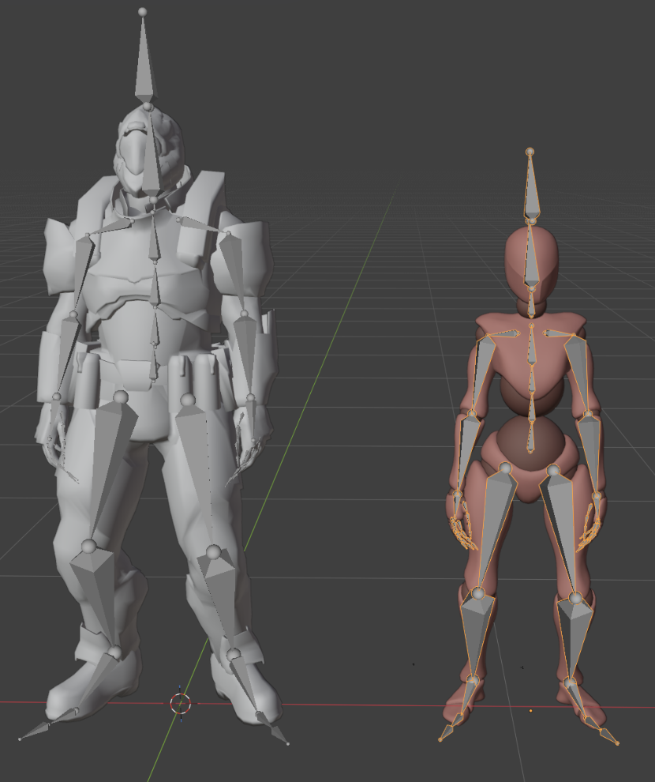
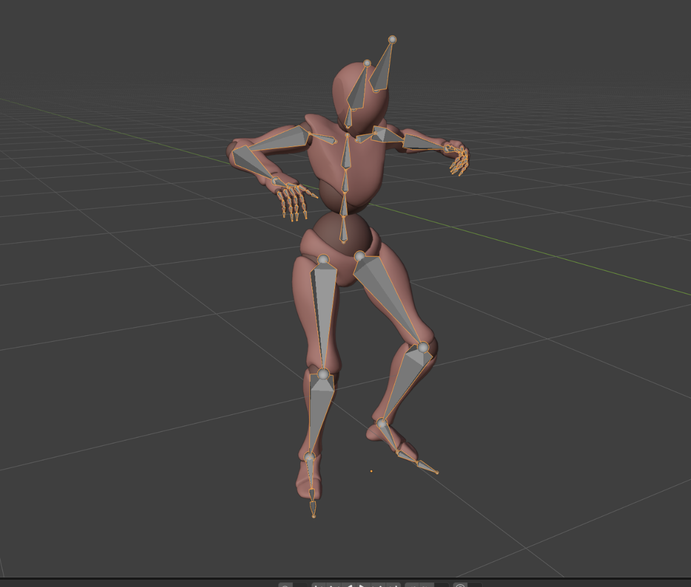
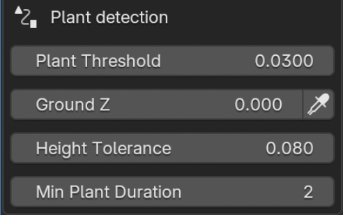

My Projects
My goal for all of my coding projects is to bridge the gap between art and technical logic together where code enhances art -- not replaces it.
I give creative liberties and freedoms for artists to value their work and enjoy the process!

Blendmo

For my senior design project, my group and I wanted to focus on building an extension within Blender that cleans up messy, jittery, and unstable motion captured data. Many instances of having messy data come from markerless capture, a more affordable and accessible option that allows people of all skill levels to dabble in the art.
My team interviewed people with motion capture experience, Chuck Ghislandi and Em Dang to gauge the main issues of cleaning up the data. We also chose to use Blender as it is a free and powerful 3D software that makes it incredibly accessible.

Our extension is coded entirely in Python using Blender's Python API and Math library and has three main functions: deleting negligible frames, locking the feet to avoid slide or skating, and rescaling motion to models of different proportions.
I worked extensively on the Foot Lock, ensuring that the feet are grounded at appropriate times. Feet can slide in all axes so it was difficult to determine when a sliding foot should be grounded or not.

First, the extension will scrub through all of the frames of the motion captured data once the user selects the Left and Right Feet. BlendMo checks how much the feet move in consecutive frames and how much distance from the ground the feet are. It provides options for the user to state where the ground should be but also provides a calculated estimate that uses average of the lower positions of the feet.
From these calculations, BlendMo has now detected “planted keyframes” that are later grouped into planted segments that have smoothstep curve interpolations at the beginning and end of them. The extension then updates the positions of the feet and issue of foot skating or sliding is resolved.